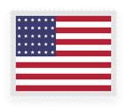

Pasaporte y ciudadanía iure sanguinis
Vía consular si tu padre, madre, abuelo o abuela tiene, o tenía al morir, solo la ciudadanía italiana. Requisitos y cómo lo gestionamos →
Ciudadanía italiana y española, visados y trámites consulares, con asesoramiento personalizado de principio a fin. Atención 100% remota, para toda Argentina y el mundo.
Elegí el destino de tu trámite.
Ciudadanía por descendencia y trámites ante el consulado o la Justicia italiana.
Vía consular si tu padre, madre, abuelo o abuela tiene, o tenía al morir, solo la ciudadanía italiana. Requisitos y cómo lo gestionamos →
Investigación genealógica y localización de partidas.
3 años de matrimonio (2 si viven en Italia, la mitad con hijos) y certificado B1.
Registro obligatorio para italianos residentes en el exterior. Lo tramitamos en Fast It, el portal consular.
Turno en Prenot@mi y documentación lista. Requiere estar en el AIRE y presentarte en el consulado. Ver turnos de CIE →
Pasaporte, CIE y ciudadanía, con modalidad exprés. Ver plazos y cómo trabajamos →
Atribución o validación en Fast It. El certificado también sirve para pedir el SPID.
Inscripción de hijos e hijas ante el consulado, y ciudadanía por declaración de los padres. Ver requisitos y plazos →
Tus datos al día ante el consulado, con los cambios de domicilio por Fast It.
Simples y públicas, para organismos italianos.
Legalización jurada y doble apostillado, cuando se requiere.
Valor académico de tu título, para estudiar o tramitar equivalencias en Italia.
Ciudadanía, residencia y documentación ante el Estado español. Qué opciones quedan después de la Ley de Nietos →
Revisión de carpeta y armado del expediente.
Ante el consulado, por Código Civil (la LMD ya no está vigente).
Partidas del Registro Civil español, con investigación genealógica.
Legalización de documentos emitidos en España.
Armado y presentación de la solicitud.
Homologación de títulos universitarios y licencias de conducir.
Ciudadanía argentina y la documentación de base para cualquier trámite.
Para hijos de argentinos nacidos en el exterior, ante el Registro Civil. Preparamos la partida extranjera apostillada y traducida, y el resto de la carpeta.
Vía judicial, ante el juzgado federal, para extranjeros con 2 años de residencia. Armamos la carpeta: partidas, antecedentes penales y medios de vida.
Partidas del Registro Civil argentino, con investigación genealógica.
Corrección de errores en partidas del Registro Civil.
Para todo tipo de presentación.
Trámite judicial para acreditar datos o vínculos.
Declaración judicial de ausencia con presunción de fallecimiento.
Para actuar en trámites en tu nombre.
Validez internacional de documentos físicos y digitales.
Visados de turismo, trabajo y estudio.

Completamos el DS-160, coordinamos la tasa consular y el turno para la entrevista en la embajada. Cómo la gestionamos →
Australia, Nueva Zelanda y Bali: turismo, tránsito, Working Holiday y visa de estudiante. Opciones por país →
Para cualquier país europeo.
No nos limitamos a Italia y España. Gestionamos actas, apostillas, legalizaciones y visados ante el organismo o consulado que corresponda, sea cual sea el destino, incluso los menos frecuentes.
Conseguimos el turno desde 24 horas en modalidad exprés, a tu nombre y con tu documentación revisada. Vos solo vas al consulado el día indicado. Pagás recién cuando tenés el turno.
Turno para sacarlo o renovarlo. En modalidad común, hasta 10 días.
Turno para la carta d’identità elettronica; requiere estar en el AIRE. En modalidad común, hasta 10 días.
Para presentar tu carpeta, con la documentación revisada antes. En modalidad común, hasta 10 días.
Ciudadanía italiana para hijos menores: actas, traducción y turno.
Somos genealogistas profesionales. Buscamos los documentos que cuentan de dónde viene tu familia y los reunimos en un legado ordenado para las próximas generaciones.
Partidas de nacimiento, matrimonio y defunción en registros civiles, parroquias y archivos de Argentina, Italia, España y otros países.
Reconstruimos tu línea generación por generación, con la fuente de cada dato.
Localizamos los registros del servicio militar de tus antepasados y los volcamos en un informe.
Un relato del origen y el recorrido de tu familia, con las actas y los documentos reunidos.
Sabés en qué punto está tu gestión en todo momento.
Relevamos tu caso por WhatsApp o videollamada y definimos qué trámite corresponde.
Búsqueda y verificación de actas, partidas y demás documentación requerida.
Presentación ante los organismos correspondientes, con seguimiento activo del expediente.
Coordinamos la entrega de la documentación resuelta, donde estés.
Somos un equipo de profesionales especializados en materia migratoria y consular.
Tu caso siempre lo llevamos nosotros. Nunca pasa a un call center ni a un tercero.
Consulados de toda Argentina y del mundo, no solo italianos.
Revisamos cada documento antes de presentarlo, para evitar demoras y rechazos.
Por WhatsApp o videollamada, estés donde estés.
La Legge 74/2025 (Decreto Tajani) limitó el reconocimiento por descendencia: hace falta un padre, madre, abuelo o abuela con ciudadanía exclusivamente italiana, salvo solicitudes, turnos asignados o demandas anteriores al 27/03/2025. En 2026 la Corte Constitucional confirmó la reforma. Para bisnietos sin trámite previo, el juicio es una vía excepcional que evaluamos caso por caso.
Cuentan los presentados o asignados hasta las 23:59 (hora de Roma) del 27/03/2025. Un intento de turno sin asignación no alcanza.
El tribunal del distrito de Italia donde nació tu ascendiente.
Descendencia documentada y constancia de que tu ascendiente no se naturalizó en otro país.
Entre 12 y 24 meses, según el tribunal.
Contamos con profesionales matriculados en Italia para llevar adelante el juicio, y te acompañamos en los trámites previos y posteriores hasta obtener la ciudadanía.
Estos elementos no son excepciones previstas en la ley: sirven para evaluar si hay argumentos para un juicio, sin garantía de resultado. La jurisprudencia varía según el tribunal; analizamos cada caso antes de avanzar y te decimos si no conviene iniciarlo. Fuentes oficiales: Corte Costituzionale, sentenza 63/2026. Verificado el 29/09/2026.
Dos o tres preguntas sobre tu familia y tu situación. Te mostramos la vía que suele aplicar según la norma vigente y la fuente oficial en la que se basa.
Es una orientación general, no un dictamen. Cada caso se confirma con la documentación.
Lo que más nos consultan sobre ciudadanías y plazos.
El plazo venció el 22 de octubre de 2025 y ya no se toman nuevas solicitudes por esa vía. Sigue habiendo otros caminos: la nacionalidad española por residencia tiene plazos reducidos para argentinos (2 años de residencia legal, o 1 en casos puntuales). Evaluamos tu situación para decirte qué opción corresponde.
Limitó el reconocimiento por descendencia a quienes tienen un padre, madre, abuelo o abuela con ciudadanía exclusivamente italiana (o que la tenía al morir). Se conservan las solicitudes, los turnos asignados y las demandas anteriores al 27/03/2025. En 2026 la Corte Constitucional confirmó la reforma. Analizamos tu caso para decirte qué camino corresponde.
Es habitual. Gestionamos la rectificación de actas, el desarchivo de sentencias y la búsqueda de documentación histórica necesaria para completar tu expediente.
Depende del tipo de trámite y del organismo interviniente. En la consulta inicial evaluamos tu caso y te damos un estimado de tiempos.
Escribinos por WhatsApp o Instagram, contanos tu caso y te decimos qué documentación necesitás y cómo seguimos.
Delegalo y empezá a sacártelo de encima. Te decimos qué documentación necesitás según tu caso.
Elegí el trámite y completá lo que sepas. El texto se escribe solo y lo revisás en WhatsApp antes de enviarlo.
Hola, Migratio. Quiero hacer una consulta.
El mensaje se arma en tu dispositivo y se abre en WhatsApp para que lo revises antes de enviarlo.